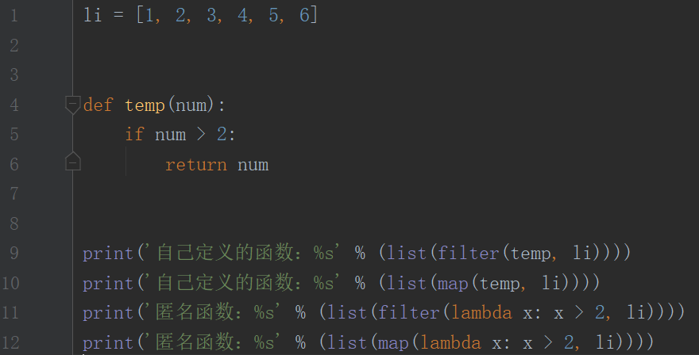
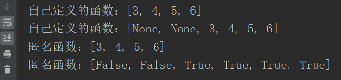
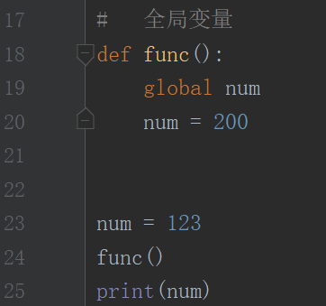
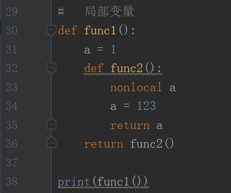
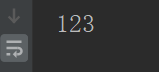
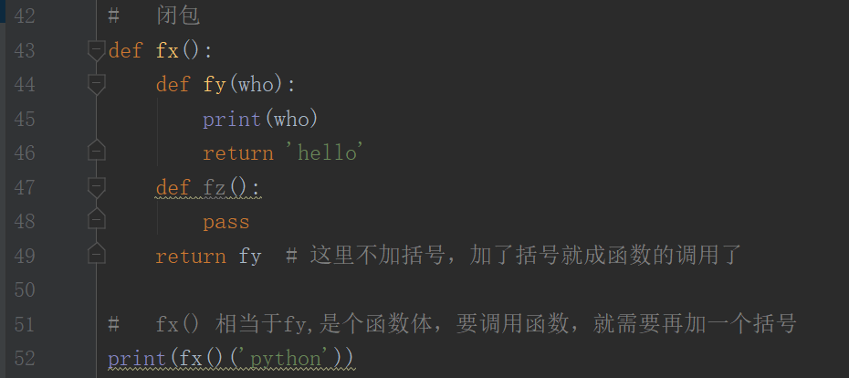
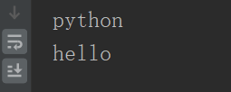
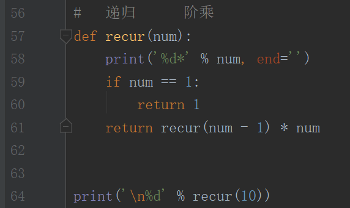
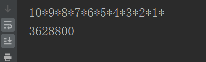
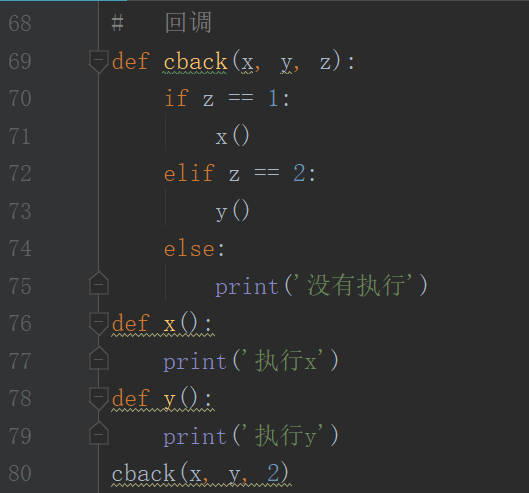

匿名函数
匿名函数 lambda
语法规则：lambda 参数 : 表达式
lambda匿名函数的格式：冒号前是参数，可以有多个，用逗号隔开，冒号右边的为表达式
lambda返回值是一个函数的地址，也就是函数对象


函数作用域
函数内部
函数内部的变量，作用域只在函数内部,函数内部不可以直接更改函数外部的变量
global(全局变量)
函数内部如果需要改变全局变量，就需要使用global修饰变量

nonlocal(局部变量)
在函数嵌套函数的情况下，同样也有函数作用域的问题，但是python3中提供了方便，只需要使用nonlocal就可以在里层函数内部修改外部函数变量


闭包
函数里面嵌套函数，外层函数返回里层函数，这种情况称之为闭包
闭包是概念，不是某种函数类型，和递归的概念类似，就是种特殊的函数调用
闭包可以得到外层函数的局部变量，是函数内部和函数外部沟通的桥梁


递归和回调函数
递归
函数可以自身调用自身，但是使用时类似于条件循环一样，要有递归的终止条件


使用递归时，可以让代码更加简洁
但递归会占用比较多的内存，当递归次数比较多时，性能就会降低，不建议多使用递归
回调
自身是一个函数，只是被传入到另一个函数当中，供其调用
回调函数不一定会被调用，是否调用由被传入函数的内部逻辑决定
